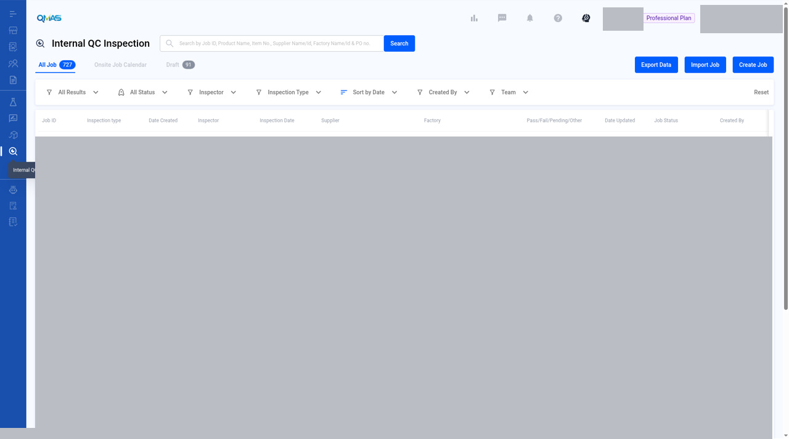
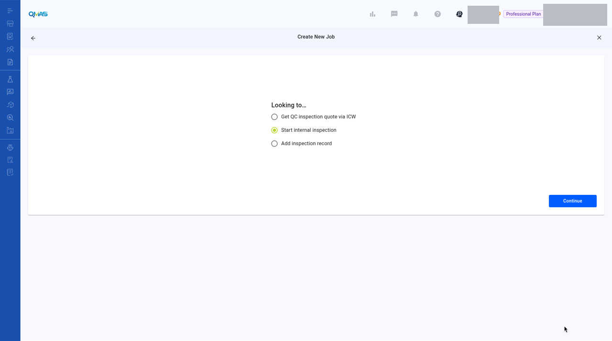
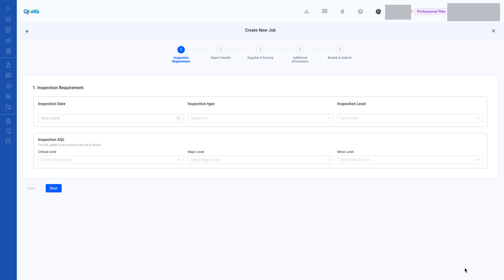

Internal QC Inspection — Start an Internal Inspection
Schedule an inspection that your own QC team carries out, without a third-party provider.
Screenshot slots: 3 reviewed replacement images.
Overview
- Open Internal QC Inspection and click Create Job. Start internal inspection is already selected. Click Continue.
- Inspection Requirement: date, type, level and AQL.
- Report Details, Supplier & Factory and Additional Information work the same way as in the QC Inspection quote flow.
- Review & Submit: check everything and click Submit.
Step-by-step
1. Open Internal QC Inspection
In the left menu, open Internal QC Inspection. The tabs show All Job, Onsite Job Calendar and Draft. Click Create Job. To add many jobs at once, use Import Job.

2. Start internal inspection
Start internal inspection is selected. Click Continue.

3. Inspection Requirement
Choose the Inspection Date, Inspection type, Inspection Level and the AQL (Critical, Major, Minor). There is no budget or service provider, because your own team does the inspection. Click Next.
The reviewed screenshot is that blank form. It does not show Target Budget or Service Provider Preference. Wizard steps 2–5 are labels only. Those screens were not captured and were not invented.

4. Steps 2–5
The next steps are the same as in the QC Inspection quote flow. See the QC Inspection guide for those steps.
- Report Details: add products and their POs.
- Supplier & Factory: select the supplier and the factory to inspect.
- Additional Information: upload reference files and add remarks.
- Review & Submit: check the summary, then click Submit. The job opens with its Job ID.
Tips
FAQ
- How do I start an internal inspection?
- Go to Internal QC Inspection (https://qmas.icw.io/inspection/internal/list), click Create Job, keep Start internal inspection selected, click Continue and complete the 5 steps. Direct link: https://qmas.icw.io/inspection/jobs/new?type=internalInspection
- Can I import internal inspection jobs?
- Yes. Click Import Job on the Internal QC Inspection list.
Help Center additions and remaining gaps
Help Center finding
There is no standalone Internal QC Help Center article.
The November 2026 QC article mentions Start internal inspection as a Looking-to option when your own QC team will inspect. That is the only Help Center mention. It does not document steps 2–5, Import Job, or the Onsite Job Calendar.
Remaining gaps
- Own screenshots, or a clearly labelled “same as QC” set, for steps 2–5 and the completed job detail.
- Import Job.
- Onsite Job Calendar tab.
- Draft tab and job detail after submit.
- Difference callouts versus third-party QC beyond “no budget/provider”.
Help Center reconciliation 2026-11-13 (HKT). Original Help Center not edited. This draft is not the public guide at the marconip2026 site. No Dify upload.